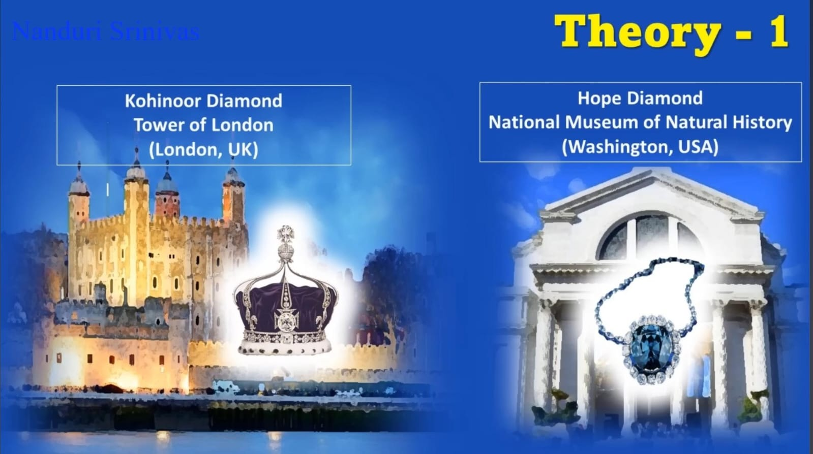
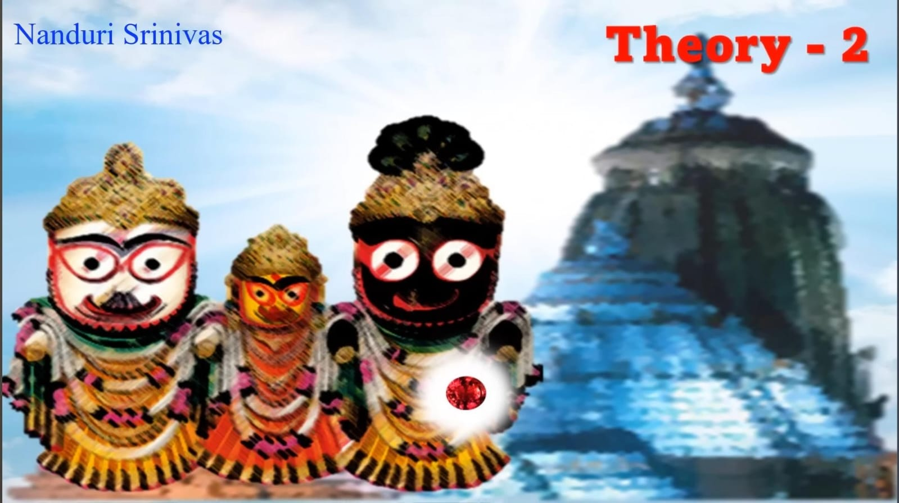

Theory #1 Kohinoor Diamond in the UK and Hope Diamond in the USA; either of them could be Syamantaka Mani.
Kohinoor originated from Kollur Mines, Guntur during the Kakatiya reign, but was later seized by Alauddin Khilji.
Eventually, the British got hold of the Kohinoor from Alauddin Khilji, which remains in Tower Of London to this day.
Part of world-renowned Crown Jewels, the preeminent diamond is set in the Crown of Queen Mother, Queen Elizabeth.
Kevin Rushby's extensive work corroborates theory #1 through his research on Kohinoor's whereabouts.
His findings and evidences fuel the widespread theory that Kohinoor "IS" the legendary Syamantaka Mani
Syamantaka Mani is bloodthirsty proving unlucky for the owners. Not to mention the ensuing drama...
Similarly, Kohinoor is reputedly the most cursed. Both gems are believed to be greatly cursed, hence the firm belief
Folks also claim that the Hope Diamond at National Museum Of Natural History, Washington DC is Syamantaka Mani
Originated from Kollur, Hope Diamond travelled from Golconda to King Louis of France and then to Washington DC
Hope Diamond emits a distinctive fiery red fluorescence when exposed to ultraviolet light
Syamantaka Mani also emits red fluorescence, hence the assumption that it could quite possibly be the legendary gem
Please do remember; Kohinoor is a Diamond, Hope is a Sapphire and Syamantaka Mani is a Ruby
Ruby is the gemstone for Sun i.e. it is Sun God's favourite, hence Syamantaka Mani is unquestionably a Ruby
In Vishnu Puranam, Satrajit pleaded with Sun God to descend in human form, who later presented him with Syamantaka Mani
Hence, there is a strong possibility of Syamantaka Mani being neither Kohinoor Diamond nor Hope Diamond
Syamantakam has a discernible brilliance. In Bhagavatam; Satrajit's subjects were flabbergasted at the sight of this gem
In Bhagavatam, owing to the brilliance of Syamantaka Mani, folks mistook Satrajit for Lord Suryanarayana Himself
Lord Krishna validates it is Satrajit instead; neither Kohinoor nor Hope Diamond is capable of such brilliance
Predominantly; Syamantaka Mani yields 8 ancient measures of gold, which didn't occur either at Washington DC or London
Neither Srimad Bhagavatam nor Vishnu Puranam claimed about Syamantaka Mani yielding gold after worshipping
Contrary to popular belief, Syamantaka Mani yields gold at dawn; not an attribute of Hope Diamond and Kohinoor Diamond
Hope Diamond and Kohinoor, both from Kollur Mines of Guntur, travelled to Washington and London respectively
Originated in Dwaraka, transported to Guntur and then overseas is a bit farfetched. Hence, disregard theory #1

Theory #2 The most contemplated by far; Syamantaka mani is the enigmatic Brahma Padartha of Puri's Lord Jagannath
Legend has it that Lord Krishna had Syamantaka Mani on Him as He left His mortal body
The fowler who wounded Lord Krishna performed His funeral, but one part of His mortal remains did not burn to ashes
Puzzled, it seems he tried to sell the part that did not burn. Changing ownership, it eventually reached Puri Jagannath
Endorsed by devotees, Brahma Padartha placed in Lord Krishna's heart cavity is annually replaced with a planned blackout
Contemporary hypothesis claims Brahma Padartha is nothing but Lord Krishna's heart, a remnant of His mortal body
Mere folklore; Bhagavatam mentions that the fowler, in bitter repentance, fasted unto death and ascended to Vaikunta
Lord Krishna spoke with charioteer Daruka proving the fowler breathed his last leaving the wounded Lord behind
Its equally farfetched to assume that the fowler performed Lord Krishna's final rights
Mahabharath's Mausala Parva vividly mentions that Arjuna performed the final rights of Lord Krishna and Lord Balarama
What is Brahma Padartha in Puri's Lord Jagannath, then? It is similar to a typical yet tiny household object.
« Previous
Next »